Chapter 17 Change relationships
As you know, a function is a mathematical idea used to represent a relationship between quantities. For instance, the water volume of a reservoir behind a dam varies with the seasons and over the years; there is a relationship between water volume (one quantity) and time (another quantity). Similarly, the flow in a river feeding the reservoir has a relationship with time. In spring the river may be rushing with snow-melt, in late summer the river may be dry, but after a summer downpour the river flow again rises briefly. In other words, river flow is a function of time.
Differentiation is a way of describing a relationship between relationships. The water volume in the reservoir has a relationship with time. The river flow has a relationship with time. Those two relationships are themselves related: the river flow feeds the reservoir and thereby influences the water volume.
It’s not so easy to keep straight what’s going on in a relationship between relationships. When you can describe such a thing, it often gives great insight to the mechanisms that drive the world. For instance, Johannes Kepler (1572-1630) spent years analyzing the data collected by astronomer Tycho Brahe (1546-1601). The data showed clearly a relationship between time and the speed of a planet across the sky. Long-standing wisdom claimed that there is also a specific relationship between a planet’s position and time. From antiquity it had been certain that planets moved in circular orbits. Kepler worked hard to find the relationship between the two relationships: speed vs time and position vs time. He was unsuccessful until he dropped the assumption that planet orbits are circular. Positing orbits as elliptical, Kepler was able to find a simple relationship between speed vs time and position vs time.
Building on Kepler’s work, Newton hypothesized that planets might be influenced by the same gravity that pulls an apple to the ground. It was evident from human experience that gravity has the most trivial relationship with time: gravity is constant! But Newton could not find a link between this constant notion of gravity and Kepler’s planetary motion as a function of time. Success came when Newton hypothesized—without any direct evidence from experience—that gravity is a function of distance. Newton’s formulation of the relationship between relationships— gravity-as-a-function-of-distance and orbital-position-as-a-function-of time—became the a foundation of model science. Newton’s theories of gravity, force, and motion created an extremely complicated chain or reasoning that is still almost impossible to grasp. Or, more precisely, it is almost impossible to grasp until you have the language for describing relationships between relationships. Newton invented this language, the language of differentiation. As you learn to understand this language, you will find it easier to express and understand relationships between relationships, that is, the mechanisms that account for the ever changing quantities around us.
17.1 Mathematics in motion
The questions that started it all had to do with motion. There were words to describe speed: fast and slow. There were words to describe force: strong and weak, heavy and light. And there were words to describe location and distance: far and near, long and short, here and there. But what were the relationships among these things? And how did time fit in, an intangible quantity that had aspects of location (long and short) and of speed (quick and slow)?  2000
2000
Galileo (1564-1642) started the ball rolling.3 As the son of a musician and music theorist, he had a sense of musical time, a steady beat of intervals. When a student of medicine in Pisa, he noted that swinging pendulums kept reliable time, regardless of the amplitude of their swing. After accidentally attending a lecture on geometry, he turned to mathematics and natural philosophy. Inventing the telescope, his observations put him on a collision course with the accepted classical truth about the nature of the planets. Seeking to understand gravity, he built an apparatus that enabled him to measure accurately the position in time of a ball rolling down a straight ramp. The belled gates he set up to mark the ball’s passage were spaced arithmetically in musical time: 1, 2, 3, 4, …. But the distance between the gates was geometric: 1, 4, 9, 16, …. Thus he established a mathematical relationship between increments in time and increments in position. Time advanced as 1, 1, 1, 1, … and position as 1, 3, 5, 7, …. He observed that the second increments of position, the increments of the increments 1, 3, 5, 7, …, were themselves evenly spaced: 2, 2, 2, …. 2005
Putting these observations in tabular form, and adding columns for the
- first increment \(y(t) \equiv x(t+1) - x(t)\) and the
- second increment \(y(t+1) - y(t)\)
| \(t\) | \(x(t)\) | first increment | second increment |
|---|---|---|---|
| 0 | 0 | 1 | 2 |
| 1 | 1 | 3 | 2 |
| 2 | 4 | 5 | 2 |
| 3 | 9 | 7 | |
| 4 | 16 |
Galileo had neither the mathematics nor the equipment to measure motion continuously in time. So what might be obvious to us now, that position is a function of time \(x(t)\), would have had little practical significance to him. But we discover in his first increments of \(x\) something very much like the slope function in Chapter ??. 2010
\[{\cal D}_t\, x(t) \equiv \frac{x(t + 1) - x(t)}{1}\] From his data, he observed that \({\cal D}_t\, x(t)\) increases linearly in \(t\): \[{\cal D}_t x(t) = 2 t + 1\]
Calculating the second increments of \(x\) is done by the “slope function of the slope function,” which we can call \({\cal D}_{tt}\): \[{\cal D}_{tt} x(t) \equiv {\cal D}_t \left[{\cal D}_t x(t)\right] = {\cal D_t} \left[\strut 2t+1\right] = \frac{\left[\strut2(t+1) + 1\right] - \left[\strut 2 t + 1\right]}{1} = 2\]
17.2 Continuous time
Newton placed the motion in continuous time rather than Galileo’s discrete time. He reframed the slope function from the big increments of the slope operator \({\cal D}_t\) to imagined vanishingly small increments of a operator that we shall denote \(\partial_t\) and call differentiation. 2015
The kind of question for which Newton wanted to be able to calculate the answer was, “How to find the function \(x(t)\) whose second increment, \(\partial_{tt} x(t) = 2\)?” His approach, which he called the “method of fluxions,” became so important that its name became, simply, “Calculus.” 2020
Over the next three centuries, calculus evolved from a set of techniques for describing motion into the general-purpose mathematics of change. Applying calculus in the real world involves understanding change relationships between quantities. To give some examples: 2025
- Electrical power is the change with respect to time of electrical energy.
- Birth rate is one component of the change with respect to time of population.
- Interest, as in bank interest or credit card interest, is the change with respect to time of assets.
- Inflation is the change with respect to time of prices.
- Disease incidence is one component of the change with respect to time of disease prevalence.
- Force is the change with respect to position of energy.
17.3 Instantaneous rate of change
On the radio once, I heard a baseball fanatic describing the path of a home run slammed just inside the left-field post. “Coming off the bat, the ball screamed upwards, passing five stories over the head of the first baseman and still gaining altitude. Then, somewhere over mid left-field, gravity caught up with the ball, forcing it down faster and faster until it crashed into the cheap seats.” A nice image, perhaps, but wrong about the physics. Gravity doesn’t suddenly catch hold of the ball; even when upward bound, gravity influences the ball to exactly the same extent as it does at the peak of the flight and as the ball falls back down. The vertical velocity of the ball is positive while climbing and negative on descent, but that velocity is steadily changing all through the flight: a smooth, almost linear numerical decrease in velocity from the time the ball leaves the bat to when it lands in the bleachers.
At each instant of time, the vertical velocity of the ball has a numerical value in feet-per-second. That value changes continuously and is never the same at any two points in the ball’s flight. If \(Z(t)\) is the height of the ball at time \(t\), and \(v_Z(t)\) is the vertical velocity at time \(t\), then the slope function \[{\cal D}_t Z(t) \equiv \frac{Z(t+h) - Z(t)}{h}\] tells us the average velocity of the ball over a time interval of \(h\).
The “average velocity” is a human construction. At each instant in time the ball has a velocity that is constantly changing. The reality of the ball is that it has only an instantaneous velocity. The average velocity is merely a concession to the way we might measure the velocity, by recording the height at two different times and computing the difference in height divided by the difference in time.
Our measurement of the average velocity gets closer to the instantaneous velocity when we make the time interval \(h\) smaller. Ideally, to genuinely reflect the state of the ball at a instant, we would make the interval of time infinitely small, that is, we would make \(h = 0\).
One thing that happens when we make \(h = 0\) is that the formula for \({\cal D}_t Z(t)\) suffers from a divide by zero; a meaningless arithmetic operation. So it would seem that “instantaneous velocity” is a mathematical non-starter, even if it is a physical reality. But there’s something else that happens when \(h = 0\), the two heights \(Z(t + h)\) and \(Z(t)\) become equal, so \(Z(t + h) - Z(t) = 0\). Not only are we dividing by zero when calculating \({\cal D}_t Z(t)\), the quantity that we are dividing zero into is itself zero. We have 0/0. That’s a doubly mysterious quantity, an arithmetic non-entity.
The mystery of 0/0 baffled mathematicians and philosophers for thousands of years. It was Newton who turned it into a computational reality, although his reasoning was regarded with suspicion for two hundred years.
The world’s best mathematicians struggled for centuries with the logic of finding a mathematical framework for making sense of what a baseball and gravity do naturally. Rather than ourselves dealing with the intricacies of mathematical logic, we can gain an adequate understanding of the situation by avoiding \(h=0\) in favor of a gentler, gradual, evanescent h.
The type of slope function calculated with this (as yet undefined) evanescent h is called a derivative and corresponds to the instantaneous rate-of-change function. The process of constructing the derivative of a function \(f(t)\) is called differentiation. And to help us keep track of things, whenever we construct a derivative of \(f(t)\), we will name the constructed function \(\partial_t f(t)\). Similarly, the name of the function that is the derivative of \(g(x)\) will be \(\partial_x g(x)\)
17.4 Slopes and motion
Consider a graph of the position of a car along a road as in Figure 17.1. Over the course of an hour, the car traveled about 25 miles. In other words, the average speed is 25 miles/hour: the slope of the tan-colored line segment. Given the traffic, sometimes the car was stopped (time C), sometimes crawling (time D) and sometimes much faster than average (time B). 2030

Figure 17.1: The position of an imagined car over an hour of time. (black) The tan-colored line shows what the position would have been if the car had travelled steadily at the average speed for the hour.
Of course, when you’re driving you are aware of the car’s speed at any instant. You need only look at the speedometer to read off the value (in miles per hour). Speedometers don’t show the average speed for the entire trip. The average speed is the slope of the tan-colored line in Figure 17.1, 25 miles in one hour, usually stated 25 miles-per-hour. 2035
In terms of Figure 17.1, the speedometer reading is the slope of \(f(t)\) at the given instant. You can see from the Figure that at instant A the speed is very close to the average speed for the entire trip. At instant B the car is going faster; the slope is much steeper. On the other hand, at instant C the car is at a standstill; its position doesn’t change at all. 2040
A car’s speedometer shows the speed at each moment—or instant—of the trip. As you can see in Figure 17.1, the speed varies and is sometimes less than the average speed, sometimes greater, and occasionally equal to the average speed over the trip. 2045
You can easily judge from a graph of \(f(t)\) whether the instantaneous speed is faster or slower than the average speed. Better, however, if we simply record the speedometer reading and graph that, as in 17.2. You can read off the speed from the graph at any instant of time simply by reference to the vertical axis.

Figure 17.2: The instantaneous speed of the car whose position vs time is shown in Figure 17.1.
The two graphs in Figures 17.1 and 17.2 show exactly the same car trip. For each of the two graphs, the presentation of the data makes it easy to see some things and hard to see others. For instance, figuring out when the car is at a stand-still is harder in the position-vs-time graph than in the speed-vs-time graph. 2050
17.5 Acceleration
Having worked out a theory of slope functions, Newton was ready to express the laws of motion in continuous time. He did this by denoting position as \(x(t)\). The familiar concepts of velocity and force could then be defined in terms of slope functions of position and the “quantity of matter,” which we call “mass.” 2055
- Velocity is the slope function of position: \(v(t) \equiv {\cal D}_t x(t)\).
- Net force is the slope function of velocity times mass: \(F(t) \equiv m {\cal D}_t v(t) = m {\cal D}_{tt} x(t)\)
To take mass out of the formulation, we give a name specifically to the slope function of velocity: acceleration.
- Acceleration is the slope function of velocity: \(a(t) \equiv {\cal D}_t v(t) = {\cal D}_{tt} x(t)\).
With acceleration as a concept, we can define net force as mass times acceleration. This is Newton’s Second Law of Motion.
We used net force as the quantity we related to mass and the slope function of velocity. There are different sources of forces which add up and can cancel out. Famously, Newton formulated the law of universal gravitation which ascribed the force between masses as proportional to the product of the two masses and inversely proportional to the square of the distance between them. But a mass on a table has no net force on it, since the table pushes back (push = force) on the mass to cancel out the force due to gravity. “Net force” takes such cancellation into account. 2060
17.6 Notations for differentiation
There are several traditional notations for differentiation of a function named \(f()\). Here’s a list of some of them, along with the name associated with each:
- Leibnitz: \(\frac{df}{dx}\)
- Partial: \(\frac{\partial f}{\partial x}\)
- Euler: \(D_x f\)
- Newton (or “dot”): \(\dot{f}\)
- Lagrange (or “prime”): \(f'\)
- One-line: \(\partial_x f\) (This hybrid of partial and Euler notation, will be the main differential notation used in this book.)
It is a fact of mathematical and scientific life that a variety of notations are used for differentiation. To some extent, this reflects historical precedence and, to be honest, nationalistic European politics of the 18th century. To make sense of mathematical writing in the many areas in which calculus is used, you have to recognize all of them for what they are. Your skill will be enhanced if you also memorize the names of the different styles. It’s not all that different from the pattern in English of having multiple words for the same sort of object, for instance: car, automobile, junker, ride, wheels, crate, jalopy, limo, motor car, horseless carriage. 2100
In the days when carriages where pulled by horses, the phrase “horseless carriage” made a useful distinction. Today, when horses are rarely seen on the road, it makes sense to trim down the notation to its essentials: horseless cariage. Think of \(\partial_x\) as this sort of minification of older notations.4
If you’ve studied calculus before, you have likely seen the \(f'\) notation. This is admirably concise but is only viable in a narrow circumstance: functions that take a single input. What \(f'\) leaves out is a means to specify a crucial aspect of differentiation, the with-respect-to variable. The general situation for differentiation involves functions of one or more variables, for example, \(g(x, y, z)\). For such functions, you need to specify which is the with-respect-to variable. For instance, we can differentiate \(g()\) three different ways, each way incrementing one or another of the three inputs: 2075
\[\partial_x g(x, y, z) \equiv \frac{g(x+h, y, z) - g(x, y, z)}{h}\]
\[\partial_y g(x, y, z) \equiv \frac{g(x, y+h, z) - g(x, y, z)}{h}\] \[\partial_z g(x, y, z) \equiv \frac{g(x, y, z+h) - g(x, y, z)}{h}\]
At this point in your studies, you haven’t seen why you might choose to differentiate a function with respect to one variable or another. That will come in time. But we want to set you up with a notation that won’t narrow your options. In this book, we will mainly use the one-line notation, \(\partial_x f\), but it means exactly the same as the Leibnitz and Partial notations, which are much more widely used in textbooks.
2080
Both the Leibnitz and Partial notations are explicit in identifying the function and the with-respect-to-variable. For example, using the Partial differentiation notation, the three ways of differentiating our example function \(g(x, y, z)\) are labeled : 2085
\[\frac{\partial f}{\partial x},\ \ \ \frac{\partial f}{\partial y},\ \ \text{and}\ \ \frac{\partial f}{\partial z}\]
Our R/mosaic computer differentiation is longer but explicit:
g <- makeFun(__formula__ ~ x & y & z) # define a function
dx_g <- D(g(x, y, z) ~ x)
dy_g <- D(g(x, y, z) ~ y)
dz_g <- D(g(x, y, z) ~ z)The names assigned to the result of the D() operator can be any names you like. What’s nice about dx_g and the others is that it mimics the math notation \(\partial_x g()\).
Notice that the R/mosaic operator for differentiation is named D() and that it is a function. It follows the same pattern as makeFun() or slice_plot() or contour_plot(): the first argument is a tilde expression, for instance g(x, y, z) ~ x, which identifies the mathematical function to work with (g()) and the name of the with-respect-to input to that function. The R/mosaic notation makes it clear that differentiation is an operation on a function. The D() operator takes a function as input and produces as output another function. We’ve seen similar behavior with, say, slice_plot(), which takes a function as input and produces graphics as output. Both D() and slice_plot() need to know the identity of the with-respect-to variable as well as the function to work with. That’s why both pieces of input are packaged into a tilde expression. 2090
We’re calling D() an operator rather than a function. The reason is purely for communication with other people. There are so many “functions” in a calculus course that we thought it would be helpful to distinguish between the kinds of functions that take quantities as input and produce a quantity as output and the functions that take a function as input and produce a function as output.5 Both sorts are called “functions” in R terminology. But a sentence like, “Differentiation is a function that takes a function as input and produces a function as output,” true though it be, is dizzying. 2095
17.7 Visualizing the slope function
Look back at Figures 17.1 and 17.2 (which we reproduce here). We know the two functions are closely related—one is the position of the car and the other the speed. But it’s hard to see the relationship at a glance. You have to go patiently back and forth between the two graphs, comparing a slope in one graph to an output value in the other graph.
 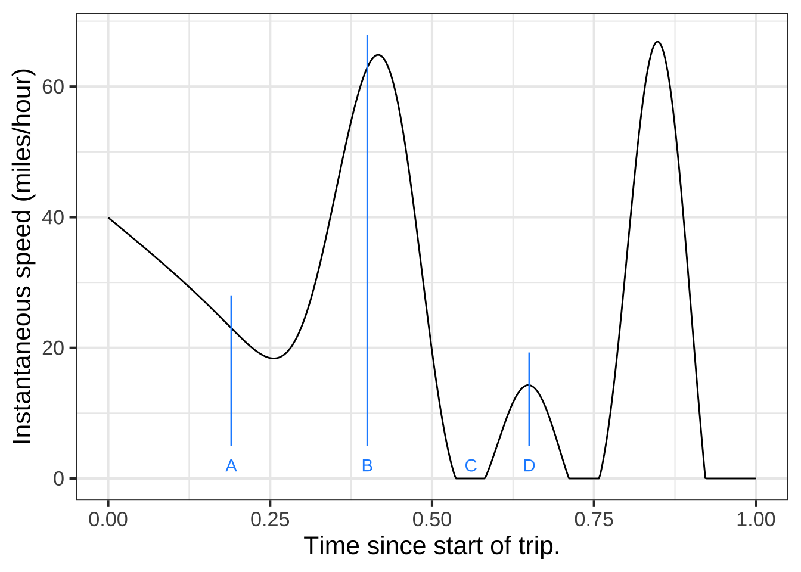
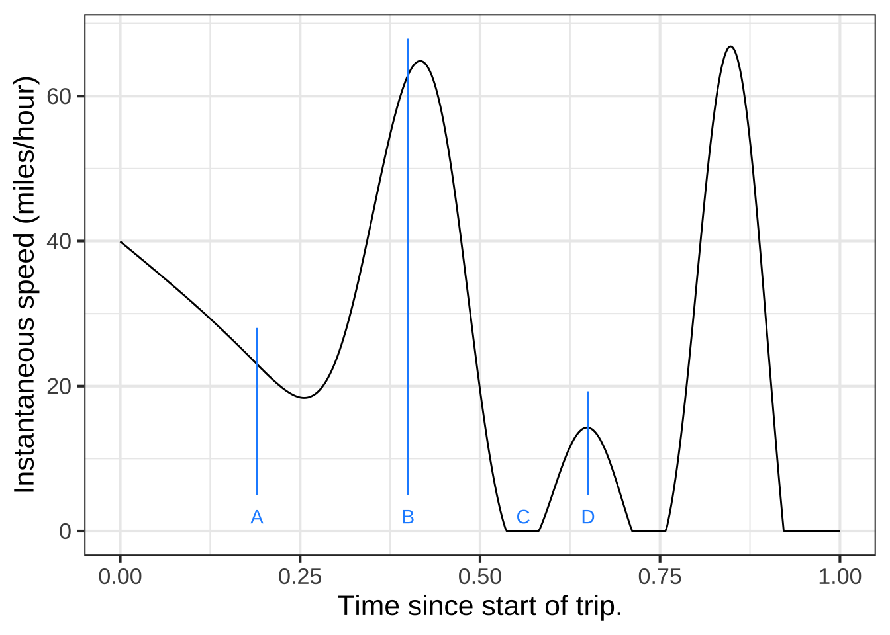
We can make things easier by taking an unconventional approach to graphing the slope function. Rather than showing the slope as the vertical position on a graph, let’s show the slope with an actual slope! Perhaps this non-standard visualization will give you a better way to understand slope functions. If so, good. The ultimate benefit of a way to show \(\diff{x} f(x)\) and \(f(x)\) in the same frame will come when we introduce the operation of anti-differentiation. 2130
Recall that the basic model of change in Calculus is the straight-line function \(\line(x) \equiv a x + b\). The slope \(a\) of \(\line(x)\) tells how the output changes for a unit change in input. In differentiation, we 2135
- approximate the parent function \(f(x)\) as a series of local line segments.
- extract the slope of each line segment as the value of the slope function at each input \(x\).
Figure 17.3 shows the segment by segment approximation around each of several input values (marked in green). The slope function visualization is constructed by throwing away the vertical offset of each of the line segments and plotting them horizontally adjacent to one another. 2140
Figure 17.3: A function \(f(x)\) shown along with the tangent line segment touching \(f()\) at each of the green points. For the slope function visualization, the tangent line segments are moved down to the horizontal axis.
You can see that the slopes are a function of \(x\), that is, the slope changes with \(x\). Because the function and it’s slope function are shown on the same graph in the same way, it’s easy to verify that the slope as a function of \(x\) corresponds to the behavior of the function itself.
Figure 17.4 shows several examples of the slope function visualization.
 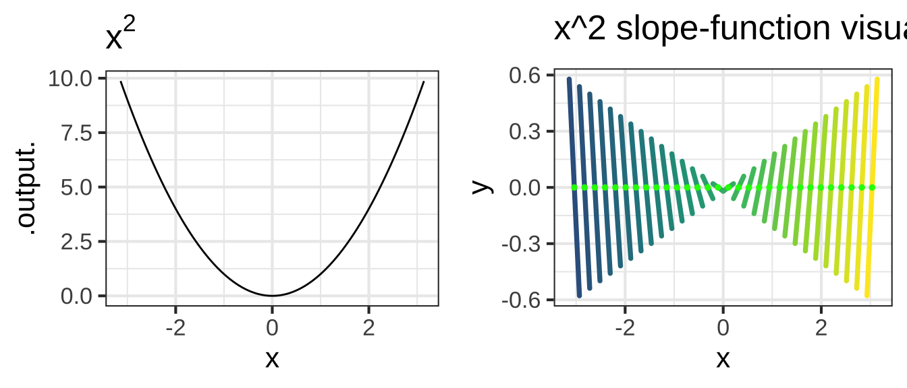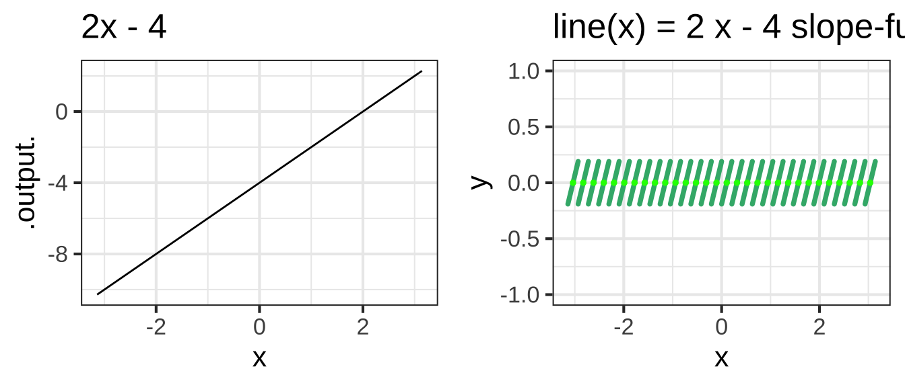
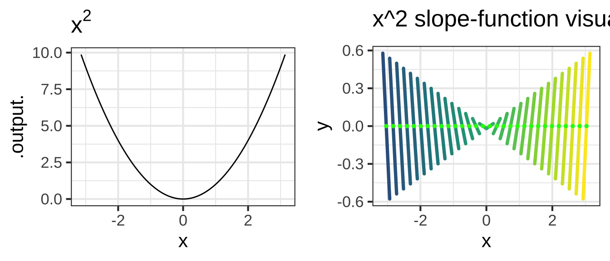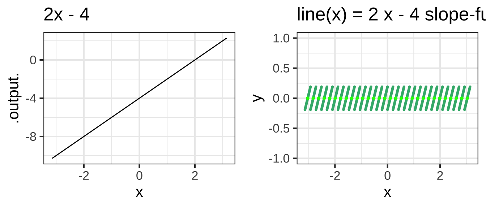
Figure 17.4: Slope-function visualizations (left) of several pattern-book functions (right).
Calculus and the Wealth of Nations
1776 can be reckoned as the birth year of two revolutions: the American Declaration of Independence and Adam Smith’s publication of the Wealth of Nations.
Smith, considered the intellectual father of free-market economics, explored the origins of the supply and demand of commodities, labor, and money. A key figure of the Scottish Enlightenment, Smith would have been well aware of Newton, his work, and the many advances enabled by the creation of calculus. Wealth of Nations lays out dozens of relationships between different quantities — wages, labor, stock, interest, prices, profits, and coinage among others. Yet Wealth of Nations does not use the concepts or language of calculus. Lacking this, Smith’s arguments, sophisticated though they be, are based on the Aristotelian notions of tendency toward a “natural” resting place.6
Consider this characteristic statement in Wealth of Nations:
The market price of every particular commodity is regulated by the proportion between the quantity which is actually brought to market, and the demand of those who are willing to pay the natural price of the commodity… Such people may be called the effectual demanders, and their demand the effectual demand.
Smith’s “natural price” and “effectual demand” are fixed quantities. But Smith lived near the end of a centuries-long period of static economies. Transportation, agriculture, manufacture, population were all much as they had been for the past 500 years or longer.7 Calculus was invented to deal with dynamics: how things change.
It took the industrial revolution and nearly a century of intellectual development before economics was seen dynamically. In this dynamical view, supply and demand are not seen as mere quantities, but as functions of which price is the major input. The tradition in economics is to use the word “curve” instead of “function,” giving us the phrases “supply curve” and “demand curve.” Many students starting out in economics can easily see supply and demand as quantities. Making the transition from quantity to function, that is, between a single amount and a relationship between amounts is a core challenge to those learning economics.
Once this transition is accomplished, economics students are taught essential concepts of calculus—particularly first and second derivatives, the subjects of this Block—although the names used are peculiar to economics, for instance, “elasticity”, “marginal returns” and “diminishing marginal returns.”

Figure 17.5: Demand as a function of price, as first published by Antoine-Augustin Cournot in 1836.
17.8 Dimension of derivatives
The function named \(\partial_t f(t)\) which is the derivative of \(f(t)\) takes the same input as \(f(t)\); the notation makes that pretty clear. Let’s suppose that \(t\) is time and so the dimension of the input is \([t] = \text{T}\).
The outputs of the two functions, \(\partial_t f(t)\) and \(f(t)\) will not, in general, have the same dimension. Why not? Recall that a derivative is a special case of a slope function, the instantaneous slope function. It’s easy to calculate a slope function:
\[{\cal D}_t f(t) \equiv \frac{f(t+h) - f(t)}{h}\] The dimension of the quantity \(f(t+h) - f(t)\) must be the same as the dimension of \(f(t)\); the subtraction wouldn’t be possible otherwise. The dimension of \(h\), similarly, must be the same as the dimension of \(t\); the addition wouldn’t make sense otherwise.
Whereas the dimension of the output \(f(t)\) is simply \(\left[f(t)\right]\), the dimension of the quotient \(\frac{f(t+h) - f(t)}{h}\) will be different. The output of the derivative function \(\partial_t f(t)\) will be \[\left[\partial_t f(t)\right] = \left[f(t)\right] / \left[t\right] .\]
Suppose \(x(t)\) is the position of a car as a function of time \(t\). Position has dimension L. Time has dimension T. The function \(\partial_t x(t)\) will have dimension L/T; that’s what velocity is, for instance miles-per-hour.
Another example: Suppose the function pressure() takes as input altitude input (in km) and returns as output a pressure (in kPa, “kiloPascal”8).
The derivative function, let’s call it \(\partial_\text{altitude} \text{pressure}()\), also takes an input in km, but produces an output in kPA per km: a rate.
17.9 Exercises
Exercise 17.02: slwdkw
Each question involves a pair of quantities that are a function of time and that might or might not be a quantity/rate-of-change pair. If they are, say which quantity is which. Feel free to look up a dictionary definition of words you are uncertain about.
Question A Deficit and debt
- Deficit is the rate of change of debt with respect to time.Nice!
- Debt is the rate of change of deficit with respect to time.︎✘
- They are not a rate of change pair.︎✘
Question B water contained and flow
- Flow is the rate of change of water contained with respect to time.Right!
- Water contained is the rate of change of flow with respect to time.︎✘
- They are not a rate of change pair.︎✘
Question C Interest rate and debt owed on credit card
- Interest rate is the rate of change of credit card debt with respect to time.Correct.
- Credit card debt is the rate of change of interest rate with respect to time.︎✘
- They are not a rate of change pair.︎✘
Question D Rain intensity and total rainfall
- Rain intensity is the rate of change of total rainfall with respect to time.Good.
- Total rainfall is the rate of change of rain intensity with respect to time.︎✘
- They are not a rate of change pair.︎✘
Question E Force and acceleration
- Force is the rate of change of acceleration with respect to time.︎✘
- Acceleration is the rate of change of force with respect to time.︎✘
- They are not a rate of change pair.Nice! The dimension of force is \(ML/T^2\). The dimension of acceleration is \(L/T^2\). A rate of change with respect to time should have an extra T in the denominator of the dimensions.
Question F Position and acceleration
- Position is the rate of change of acceleration with repect to time.︎✘
- Acceleration is the rate of change of position with respect to time.︎✘
- They are not a rate of change pair.Right! The dimension of position is \(L\). The dimension of acceleration is \(L/T^2\). The rate of change of position would have dimension \(L/T\). That’s called ‘velocity’.
Question G Velocity and air resistence
- Velocity is the rate of change of air resistence with repect to time.︎✘
- Air resistence is the rate of change of velocity with respect to time.︎✘
- They are not a rate of change pair.Excellent! Air resistence is a force, with dimension \(M L/T^2\). Velocity has dimension \(L/T\). The rate of change of velocity with respect to time is acceleration, which has dimension \(L/T^2\).
Exercise 17.04: eodlt
Recall from Section ?? that a function is monotonically increasing on a given domain when the function’s slope is positive everywhere in that domain. A monotonically decreasing function, similarly, has a negative slope everywhere in the domain. When the slope is zero, or positive in some places and negative in others, the function is neither monotonically increasing or decreasing.
Each of the following graphs shows the derivative of some function \(f(x)\). (Note: the graph doesn’t show \(f(x)\) but rather the function \(\partial_x f(x)\)) For each graph, say whether the function \(f()\) is monotonically increasing, monotonically decreasing, or neither. (Note that the horizontal scale is the same in every graph, but the vertical scale can be different from one scale to another.)
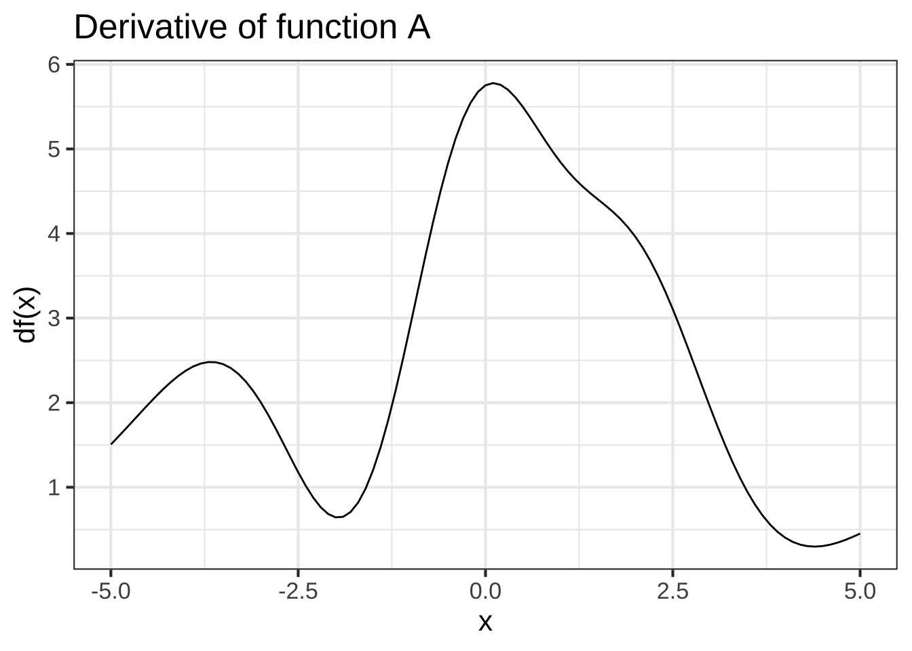
Question A Function A is …
- monotonically increasingNice! A monotonically increasing function has a function that is everywhere \(> 0\)
- monotonically decreasing︎✘ A monotonically increasing function has a function that is everywhere \(> 0\)
- constant︎✘ A constant function has a derivative that is everywhere 0.
- non-monotonic︎✘ A non-monotonic function goes up and down, hence the derivative is positive in some places and negative in others.
- Can’t tell from the info provided︎✘ This is the case if you cannot tell if the derivative is positive or negative.

Question B Function B is …
- monotonically increasing︎✘ A monotonically increasing function has a function that is everywhere \(> 0\)
- monotonically decreasingExcellent! A monotonically increasing function has a function that is everywhere \(> 0\)
- constant︎✘ A constant function has a derivative that is everywhere 0.
- non-monotonic︎✘ A non-monotonic function goes up and down, hence the derivative is positive in some places and negative in others.
- Can’t tell from the info provided︎✘ This is the case if you cannot tell if the derivative is positive or negative.
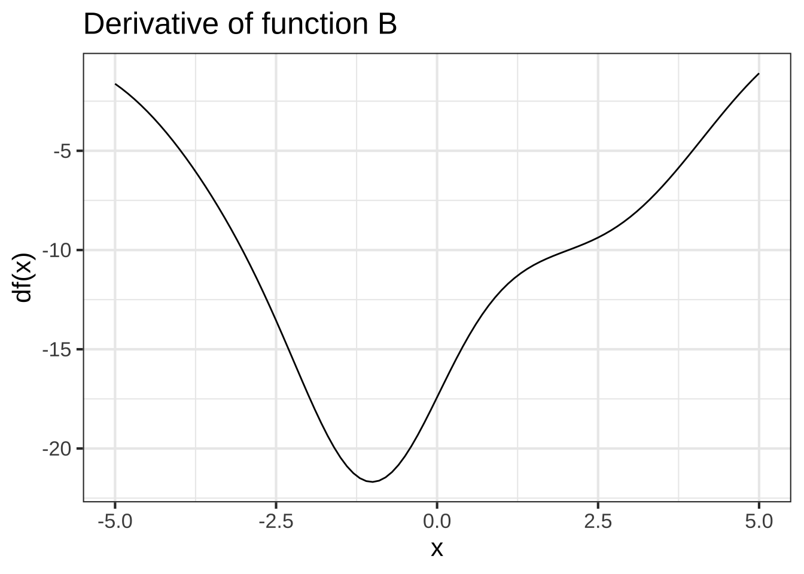
Question C Function C is …
- monotonically increasing︎✘ A monotonically increasing function has a function that is everywhere \(> 0\)
- monotonically decreasing︎✘ A monotonically increasing function has a function that is everywhere \(> 0\)
- constant︎✘ A constant function has a derivative that is everywhere 0.
- non-monotonicCorrect. A non-monotonic function goes up and down, hence the derivative is positive in some places and negative in others.
- Can’t tell from the info provided︎✘ This is the case if you cannot tell if the derivative is positive or negative.
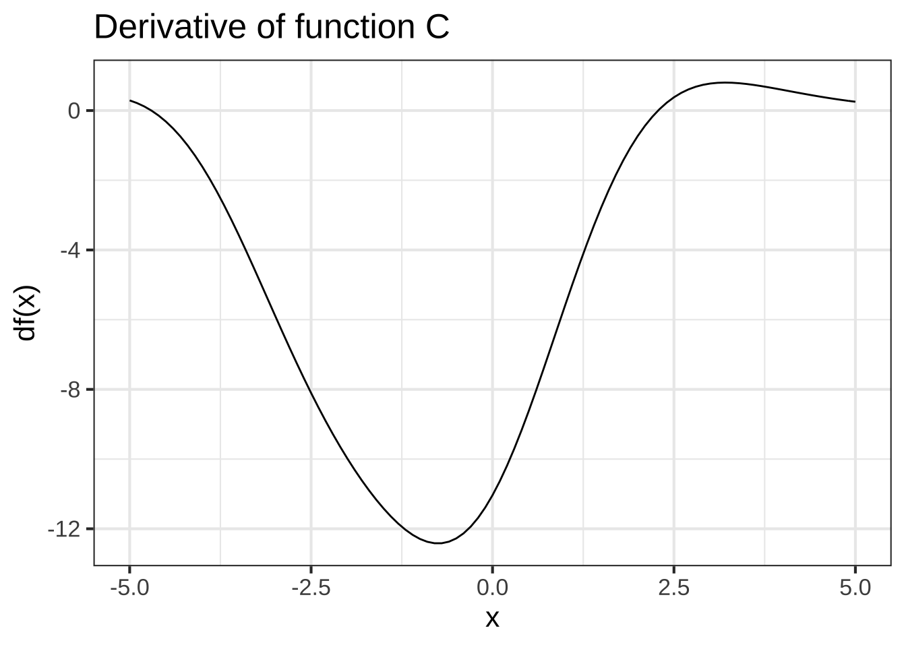
Question D Function D is …
- monotonically increasingCorrect. A monotonically increasing function has a function that is everywhere \(> 0\)
- monotonically decreasing︎✘ A monotonically increasing function has a function that is everywhere \(> 0\)
- constant︎✘ A constant function has a derivative that is everywhere 0.
- non-monotonic︎✘ A non-monotonic function goes up and down, hence the derivative is positive in some places and negative in others.
- Can’t tell from the info provided︎✘ This is the case if you cannot tell if the derivative is positive or negative.
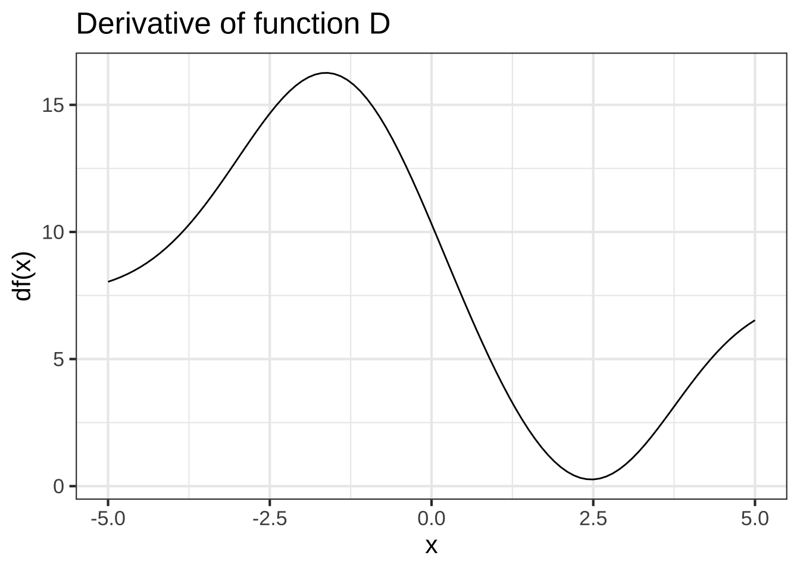
Question E Function E is …
- monotonically increasing︎✘ A monotonically increasing function has a function that is everywhere \(> 0\)
- monotonically decreasing︎✘ A monotonically increasing function has a function that is everywhere \(> 0\)
- constant︎✘ A constant function has a derivative that is everywhere 0.
- non-monotonic︎✘ A non-monotonic function goes up and down, hence the derivative is positive in some places and negative in others.
- Can’t tell from the info providedRight! This is the case if you cannot tell if the derivative is positive or negative.
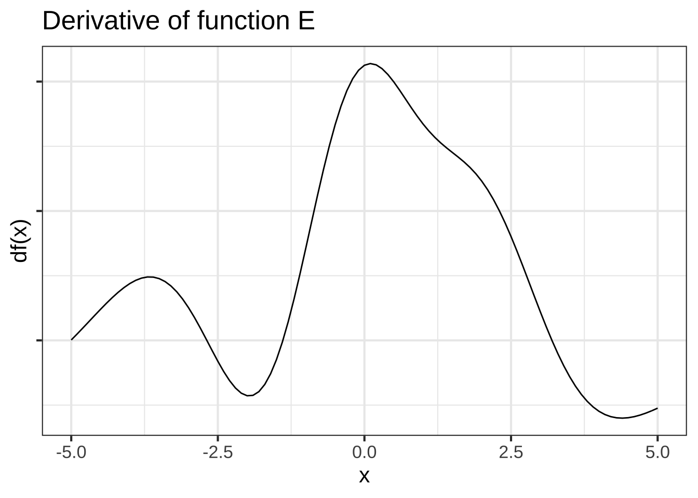
Question F Function F is …
- monotonically increasingGood. A monotonically increasing function has a function that is everywhere \(> 0\)
- monotonically decreasing︎✘ A monotonically increasing function has a function that is everywhere \(> 0\)
- constant︎✘ A constant function has a derivative that is everywhere 0.
- non-monotonic︎✘ A non-monotonic function goes up and down, hence the derivative is positive in some places and negative in others.
- Can’t tell from the info provided︎✘ This is the case if you cannot tell if the derivative is positive or negative.
Exercise 17.06: iclcws
Here are graphs of various functions. The right column shows functions named \(f_1()\), \(f_2()\), and so on. The left column shows functions \(A()\), \(B()\), \(C()\), and so on. Most of the functions on the right are the derivative of some function on the left, and most of the functions on the left have their corresponding derivative on the right. Your task: Match the function on the left to it’s derivative on the right.
 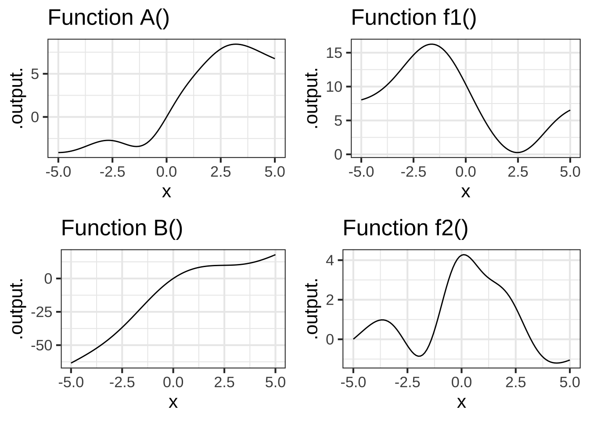
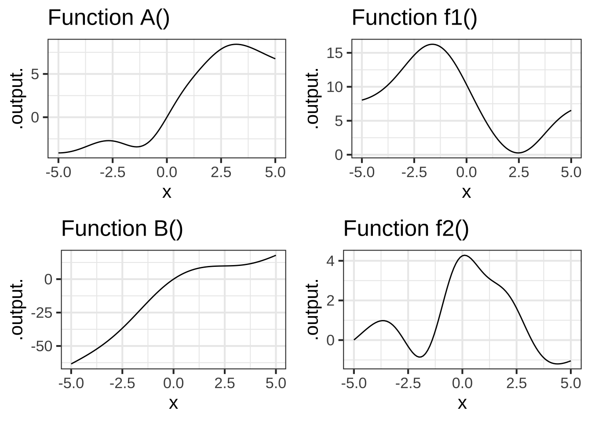
Question A The derivative of Function A() is which of the following:
f1()︎✘ f2()\(\heartsuit\ \) f3()︎✘ f4()︎✘ not shown︎✘
Question B The derivative of Function B() is which of the following:
f1()\(\heartsuit\ \) f2()︎✘ f3()︎✘ f4()︎✘ not shown︎✘
Question C The derivative of Function C() is which of the following:
f1()︎✘ f2()︎✘ f3()︎✘ f4()\(\heartsuit\ \) not shown︎✘
Question D The derivative of Function D() is which of the following:
f1()︎✘ f2()︎✘ f3()︎✘ f4()︎✘ not shown\(\heartsuit\ \)
Exercise 17.08: helxs
The left column of graphs shows functions A(), B(), C(), and D(). The right column shows functions dd1(), dd2(), and so on. Find which function (if any) in the right column corresponds to the 2nd derivative of a function in the left column.
Remember the concepts of “concave up” (a smile!) and “concave down” (a frown). At those values of \(x\) for which the 2nd derivative of a given function is positive, the given function will be concave up. When the 2nd derivative is negative, the given function will be concave down.
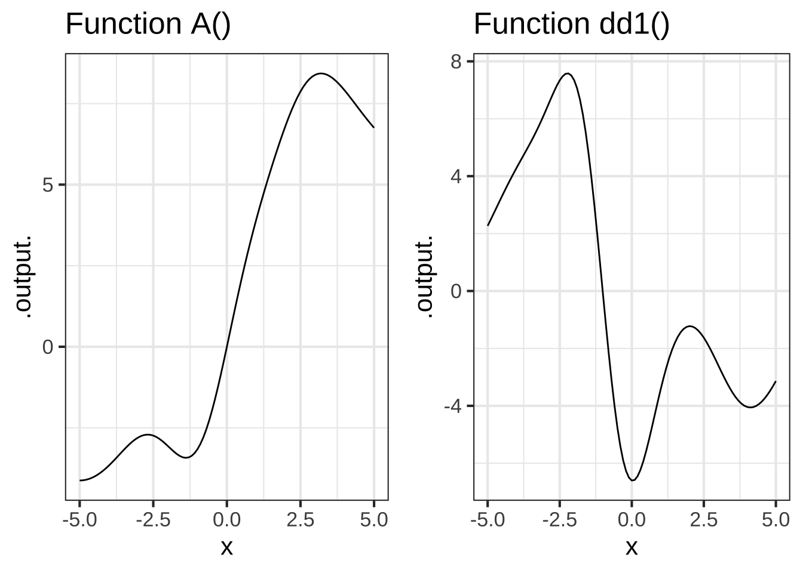 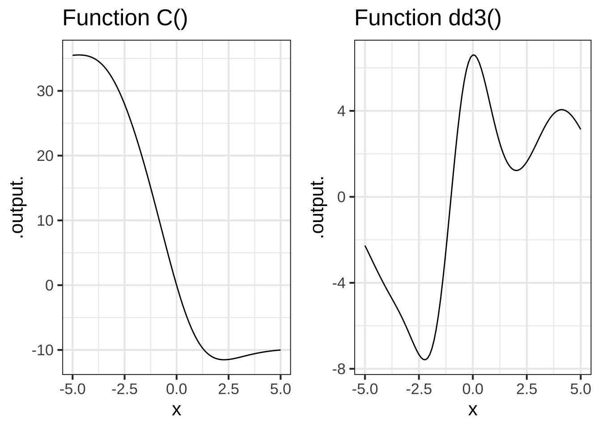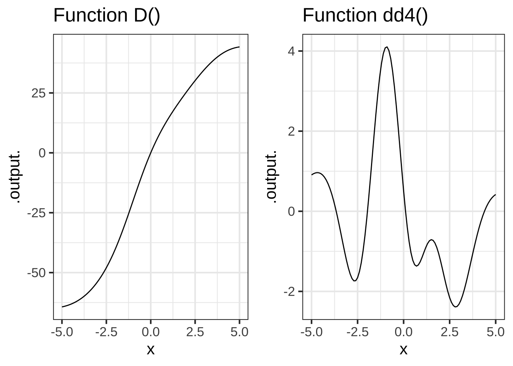
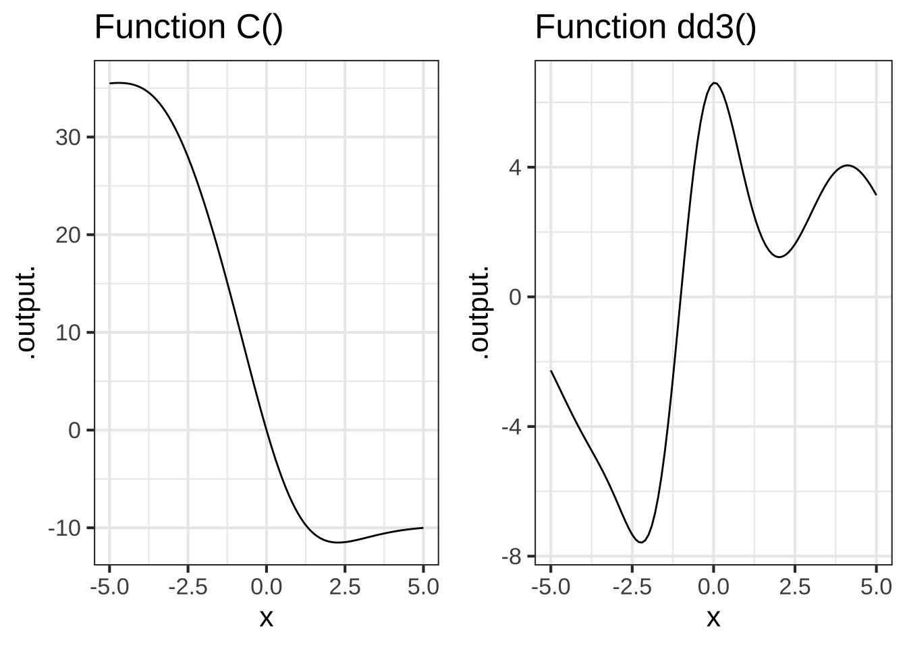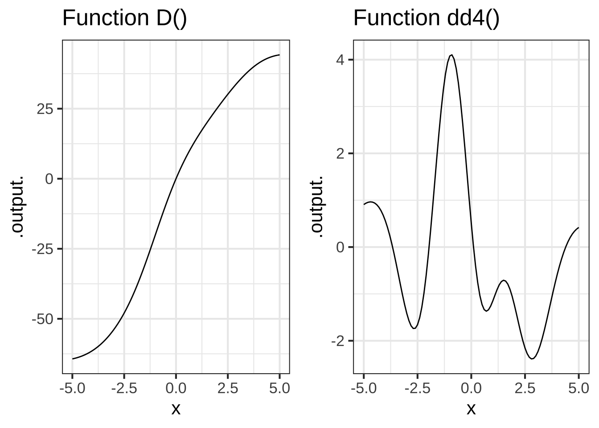
Question A The second derivative of Function A() is which of the following:
dd1()︎✘ dd2()︎✘ dd3()︎✘ dd4()\(\heartsuit\ \)
Question B The second derivative of Function B() is which of the following:
dd1()︎✘ dd2()︎✘ dd3()\(\heartsuit\ \) dd4()︎✘
Question C The second derivative of Function C() is which of the following:
dd1()︎✘ dd2()\(\heartsuit\ \) dd3()︎✘ dd4()︎✘
Question D The second derivative of Function D() is which of the following:
dd1()\(\heartsuit\ \) dd2()︎✘ dd3()︎✘ dd4()︎✘
Exercise 17.10: 1kZXxT
The plots each show a function graphed in the usual way, and a slope function graphed using the slope function visualization. Your task is to determine whether the slope function being displayed in each graph is a match to the function in that graph.

Question A In plot (A), does the slope function displayed correspond to the function that’s graphed?
Yes\(\heartsuit\ \) No︎✘
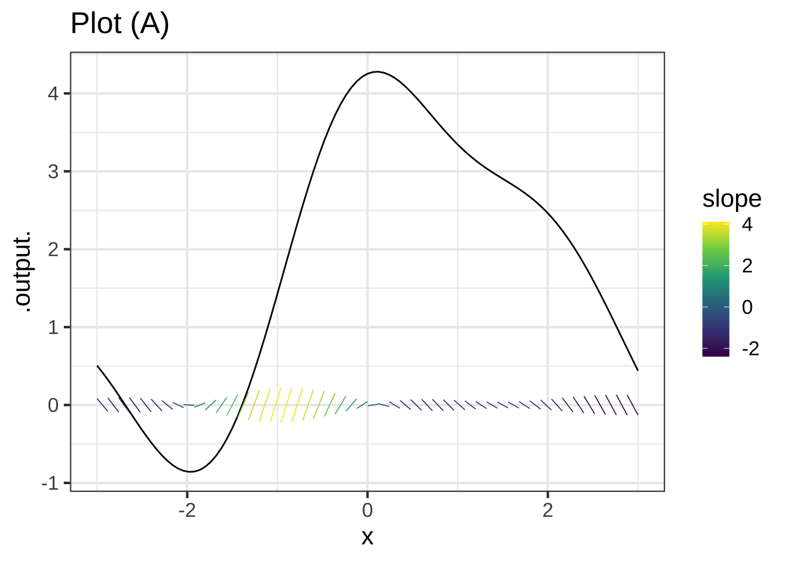
Question B In plot (B), does the slope function displayed correspond to the function that’s graphed?
Yes︎✘ No\(\heartsuit\ \)
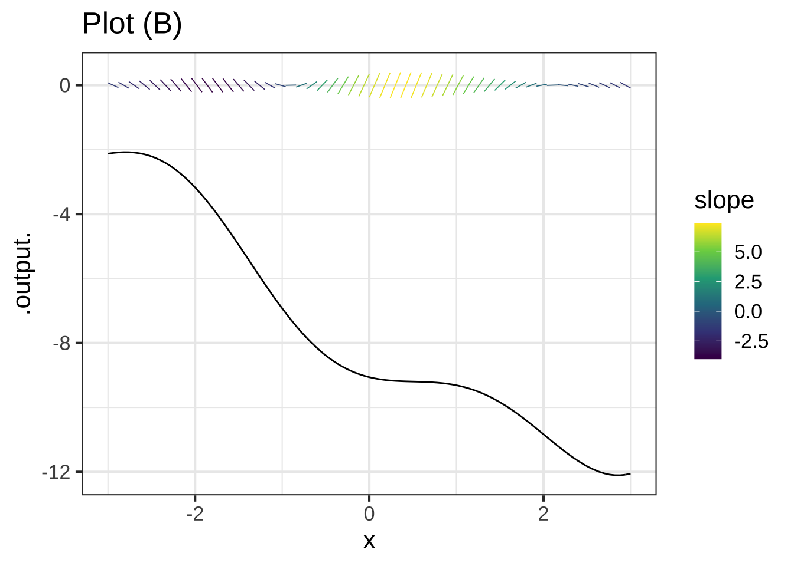
Question C In plot (C), does the slope function displayed correspond to the function that’s graphed?
Yes\(\heartsuit\ \) No︎✘
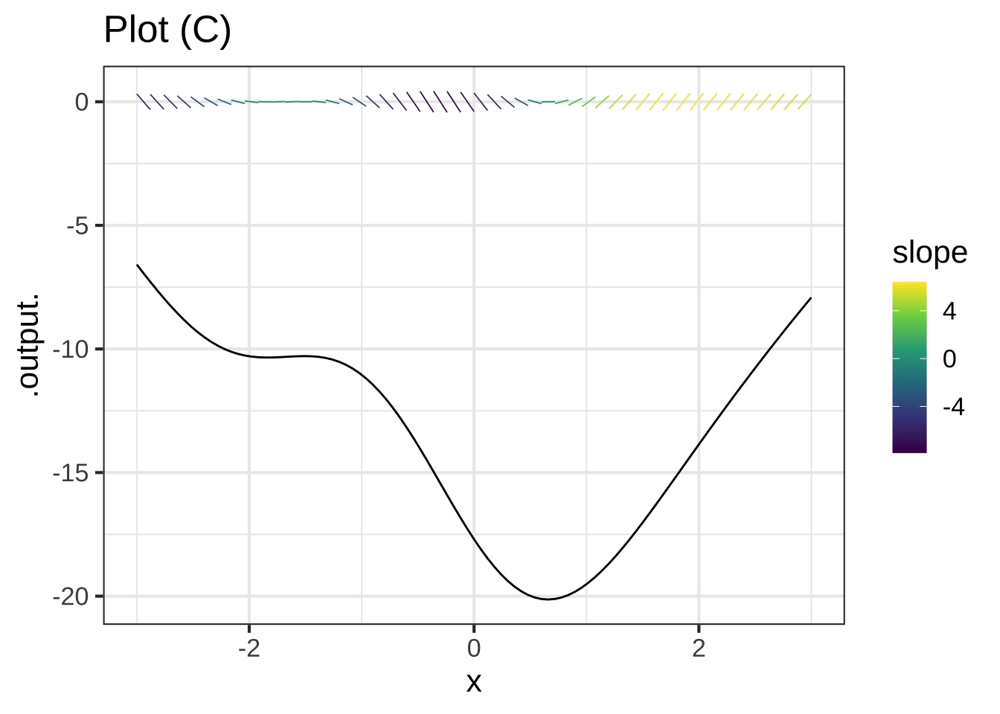
Question D In plot (D), does the slope function displayed correspond to the function that’s graphed?
Yes︎✘ No\(\heartsuit\ \)
Exercise 17.12: eyded
In the following, three different functions are described. Your task is to write down the dimension of the input and of the output. Do this both for the function itself, and for the derivative of the function. For example, the dimension of the output of \(N(y)\) given below is P, for population. The input has dimension T, for time.
A. The given function is \(N(y)\), the population of the Netherlands in year \(y\).
- Dimension of input to \(N(y)\)?
- Dimension of output from \(N(y)\)?
- Dimension of input to \(\partial_y N(y)\)?
- Dimension of output from \(\partial_y N(y)\)?
B. The given function is \(p(u)\), the net profit from a manufactured good as a function of the number of units manufactured.
- Dimension of input to \(p(u)\)?
- Dimension of output from \(p(u)\)?
- Dimension of input to \(\partial_u p(u)\)?
- Dimension of output from \(\partial_u p(u)\)?
C. The given function is \(w(t)\), the amount of water in a leaky bucket at any time after the bucket was filled.
- Dimension of input to \(w(t)\)?
- Dimension of output from \(w(t)\)?
- Dimension of input to \(\partial_t w(t)\)?
- Dimension of output from \(\partial_t w(t)\)?
Exercise 17.14: elclvd
Question A Tanks for bulk storage of natural gas are typically large cylinders with a cap that can move up and down. The volume of the tank is a function of the position of the cap. What is the dimension of the derivative of cylinder volume with respect to cap position?
\(L^2\)\(\heartsuit\ \) \(L\)︎✘ \(L^3\)︎✘ \(L^3/T\)︎✘ \(T/L^3\)︎✘
Exercise 17.16: nsmx8w3
The standard model of epidemics used in public health planning is called the SIR model. (SIR stands for “Susceptible (S), Infective (I), Recovered (R)”, the sequence that a person starts in, moves to, and ends up in (hopefully!) in an epidemic.)
One of the equations in the SIR model is \[\frac{dS}{dt} = -a S I\]
The notation \(dS/dt\) means “the rate of change of number of susceptibles, S, with respect to time.” This has dimension “people/T”. The dimensions \([S]\) and \([I]\) are each simply “people.”
Question A What is \([a]\)?
- T︎✘
- T\(^{-1}\)︎✘
- people/T︎✘ Then \([a S I]\) would be people\(^3\)/T, but that’s not the same as \([dS/dt]\).
- people\(^{-1}\) T\(^{-1}\)Correct. This correctly gives \([a S I]\) as people/T, which is the same as \([dS/dt]\).
- people \(\times\) T︎✘
- None of the above.︎✘
Another equation in the SIR model describes how the number of infective people changes over time:
\[\frac{dI}{dt} = - a S I - b I\] where \([\frac{dI}{dt}] =\) people/T.
Question B What is \([b]\)?
- T︎✘
- T\(^{-1}\)Right!
- people/T︎✘ Then \([a S I]\) would be people\(^3\)/T, but that’s not the same as \([dS/dt]\).
- people\(^{-1}\) T\(^{-1}\)︎✘ If this were true, \([bI]\) would be T\(^{-1}\). But \([bI]\) has to be the same as \([dI/dt]\), which is people \(T^{-1}\).
- people \(\times\) T︎✘
- None of the above.︎✘
Galileo was not aware of Kepler’s elliptical theory, even though they lived at the same time.↩︎
It’s pretty easy to see in an expression like \(f(x,y)\) why we call \(f()\) a function. But an expression like \(3+2\) also involves a function of two inputs. It’s just that we write the name of the function (
+) in between the two inputs. This is called infix notation.↩︎For more discussion, see Tony Aspromourgos (2007) “Adam Smith’s treatment of market prices and their relationship to <
> and < >” History of Economic Ideas , 2007, Vol. 15, No. 3 (2007), pp. 27-57 Link↩︎ Smith commented on the difference between “demand” and “effectual demand:” “A very poor man may be said, in some sense, to have a demand for a coach and six [a carriage pulled by six horses]; he might like to have it; but his demand is not an effectual demand, as the commodity can never be brought to market in order to satisfy it.” In today’s economy, of course, transportation superior to a coach and six is readily demanded and supplied.↩︎
Air pressure at sea level is about 100 kiloPascal.↩︎